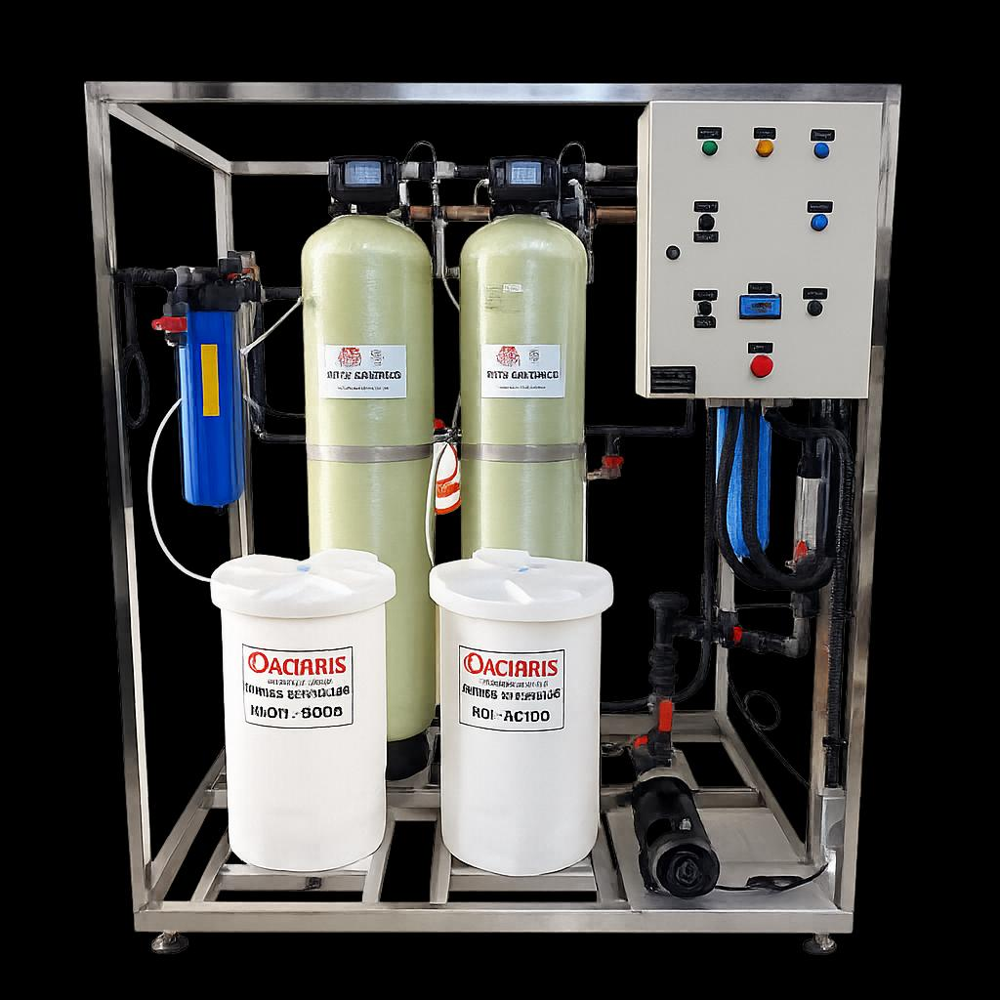
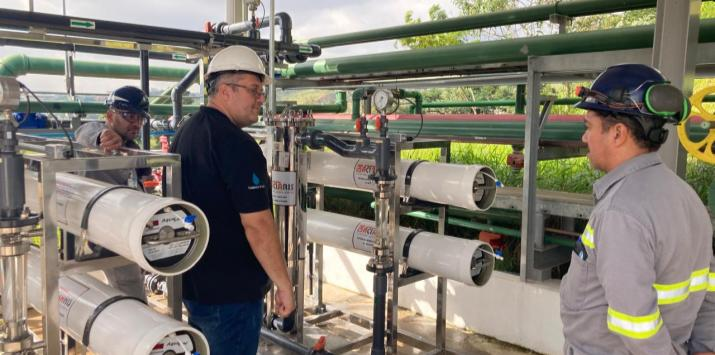
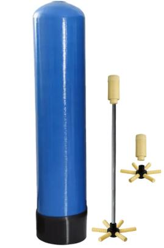
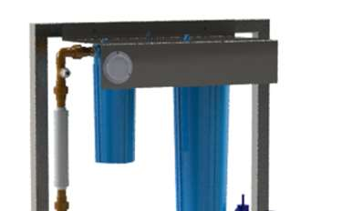
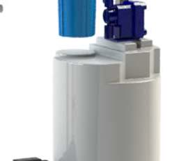
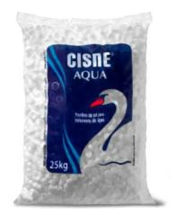

Engenharia · Projetos · Serviços
Projetamos, fornecemos e mantemos sistemas de osmose reversa, desmineralização, abrandamento e ultrafiltração para as indústrias farmacêutica, hospitalar, alimentícia, cosmética e química, e também para condomínios.


Cada indústria define o seu limite aceitável de contaminantes, e é a partir dele que dimensionamos o sistema.
Do projeto ao comissionamento, cada sistema é dimensionado para a vazão e a qualidade de água que a sua planta precisa.
Osmose reversa de duplo passo, com zero descarte. Remove sais, metais e contaminantes e atende às normas da ANVISA e do MAPA.
Remoção de sais minerais por troca iônica, em versões compactas e industriais para diversas demandas de vazão.
Eliminação da dureza da água (cálcio e magnésio) via resina de troca iônica, prevenindo incrustações em caldeiras.
Remove sólidos suspensos, bactérias e vírus com membranas de fibra oca, garantindo pureza microbiológica.

Diagnóstico 360°
Uma avaliação técnica do seu tratamento de água, do ponto de captação até a qualidade final. Analisamos operação, química e estrutura para encontrar gargalos, otimizar processos e garantir qualidade, desempenho e economia.
Cinco etapas, do agendamento ao plano de ação priorizado.
Inspeção técnica e levantamento de dados de operação em campo.
Tipo, modelo, validade e estado operacional de filtros, válvulas, bombas e instrumentação.
Cálculo de eficiência, regenerações, perdas e consumo de insumos.
Identificação de pontos críticos e recomendações personalizadas.
Apontamentos de melhoria com priorização técnica e cronograma de execução.

Projetos e engenharia
Nossa equipe de engenharia analisa a infraestrutura existente e a qualidade de água exigida para definir a solução. Do projeto ao comissionamento, fazemos testes de fábrica (FAT), testes em campo (SAT) e qualificação de instalação (IQ).
Fornecimento contínuo de reposição para qualquer sistema de tratamento de água.

Filtração mecânica e remoção de cloro livre.

Polipropileno, plissados e cartuchos de carvão ativado.

Reservatórios, válvulas e conexões para sistemas completos.

Resinas de troca iônica para os mais diversos processos.
Publicamos aqui só o que interessa a quem visita o site.